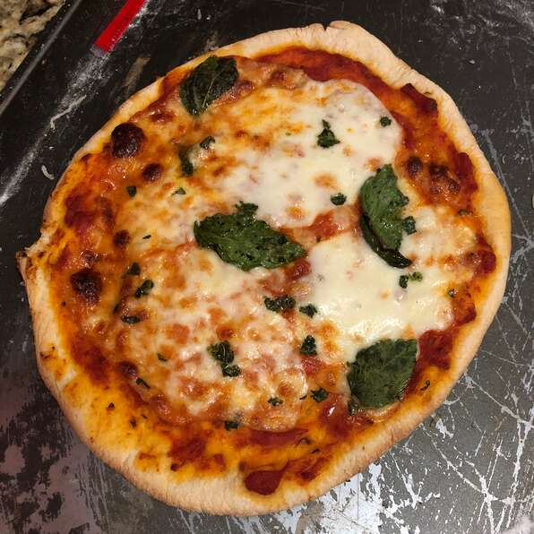

Pizza

Per Serving: 966 calories; protein 48.7g;
carbohydrates 105.8g; fat 37g; cholesterol 89.6mg; sodium 2187.4mg.
This pizza takes a classic look at the popular dish. Inspired by the pizza
at Bar Del Corso, this Pizza Margherita features tomato sauce,
mozzarella, and basil, with just a hint of sea salt
Ingreditents
- 3 1/2 cups all-purpose flour
- 1 teaspoon salt
- 1 cup water
- 1 pinch white sugar
- 1/4 cup of flour for dusting
- 2 cups of pizza sauce
- 20 slices fresh mozzarella cheese
Directions
- Stir flour and 1 teaspoon salt in a bowl. Set aside
- Mix water, yeast, and sugar in a large bowl.
Let stand until yeast begins to form a creamy foam, about 5 minutes.
- Stir half the flour mixture into yeast mixture until no dry spots remain.
Stir in remaining flour, 1/2 cup at a time, mixing well after
each addition. When dough pulls together, turn it out onto a
lightly floured surface and knead until smooth and elastic, about 8 minutes.
- Bake the pizza for 30 minutesss
Return to main page